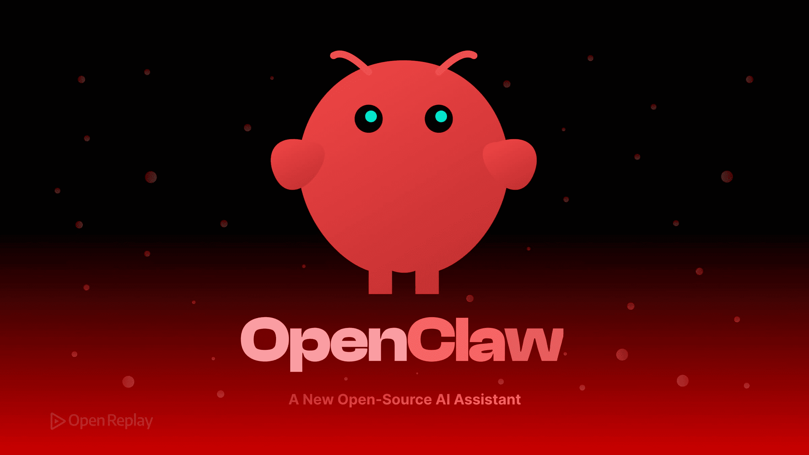

Étudiant en Réseaux Informatiques & Télécommunications
Passionné par l'infrastructure réseau, la cybersécurité, le développement et l'automatisation.
Infrastructure, connectivité, protocoles et sécurité réseau
Conception d'un réseau d'entreprise avec 3 sites interconnectés en OSPF, VLAN, DHCP relay et ACLs sous GNS3.
Voir la topologie →Mise en place d'un réseau complet : serveurs DNS/HTTP/DHCP, switchs VLAN, routage statique et NAT.
Voir le projet →Capture et analyse de trafic avec Wireshark, création de règles firewall iptables sur Linux.
Voir l'analyse →Installation et configuration d'un serveur Web Apache, DNS BIND9 et FTP sous Ubuntu Server.
Voir la config →Déploiement d'un serveur DHCP avec réservations et d'un serveur DNS avec zones forward/reverse sous Linux.
Voir la config →Scripts, outils, applications et automatisation réseau
Script Python utilisant Netmiko pour sauvegarder automatiquement les configs de 10+ switchs Cisco.
Voir le code →Outil en Python qui scanne les ports, détecte les appareils actifs et envoie des alertes email.
Voir le projet →Application web (Flask + Chart.js) pour visualiser l'état des équipements réseau (ping, uptime).
Voir la démo →Outil Python qui génère automatiquement des fichiers de configuration pour routeurs/switchs à partir d'un template.
Voir le code →Outil de gestion d'événements réseau et de supervision, avec interface web Flask et base de données SQLite.
Voir le projet →
Déploiement d'un agent IA local avec OpenClaw, Ollama et le modèle phi3:mini. Accessible via Telegram (@flavien_ai_bot) et WhatsApp. Auto-hébergé sous VMware.
Voir le projet →Outil shell pour auditer la sécurité d'un serveur Linux (logs, services, ports ouverts).
Voir le script →Stages, responsabilités et missions
Moov Africa Burkina
Juillet 2025
ESUPEX - Ouagadougou
2026 - 2027
Mon parcours académique et certifications
ESUPEX (Ecole Supérieure Polytechnique Excelle) - Ouagadougou
2ème année - Spécialité : Réseaux et Télécoms
Élu Délégué Général des Étudiants (2026-2027)
Lycée Scientifique de Tenkodogo
Spécialité : Mathématiques / Sciences physiques
Moyenne : 15.42/20
Petit Séminaire Saint Augustin de Baskouré
Moyenne : 16.62/20
Networking Basics - Cisco Packet Tracer
Introduction aux réseaux (CCNA1) - En cours
📧 Email : flavienkiema1@gmail.com
🔗 LinkedIn : linkedin.com/in/flavienkiema
💻 GitHub : github.com/Flavino-Hack/
📱 Tél : 64 93 16 93 / 70 57 08 57
📍 Ville : Ouagadougou, Burkina Faso